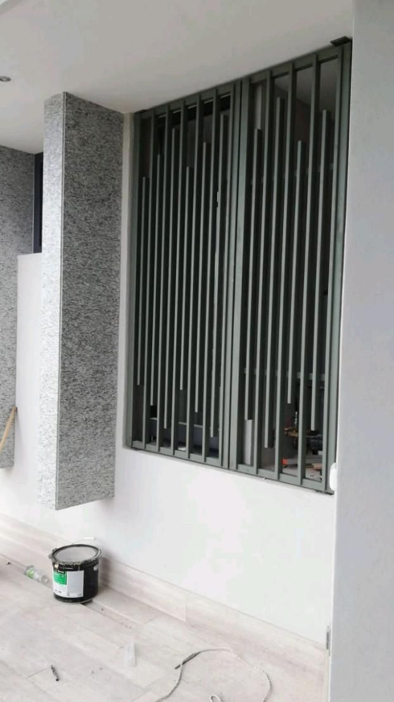
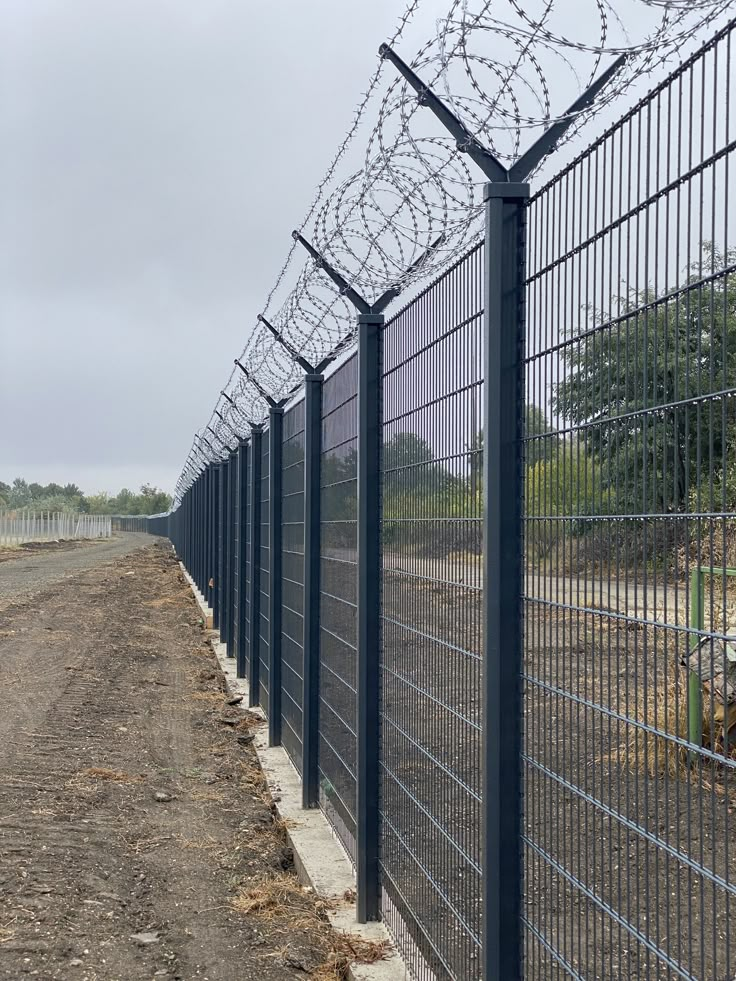

Our Products
Explore our wide range of steel products designed for homes and businesses. Whether you need robust gates, secure burglar bars, or decorative fencing, STEEL@MAJOR has you covered.

Gates
Our steel gates combine strength and style. Choose from a variety of designs that enhance the security and look of your property.
View More

Burglar Bars
Protect your home with custom burglar bars made from premium steel. Our designs offer maximum security without compromising aesthetics.
View More

Fences
Our steel fences provide long-lasting protection for your property. Ideal for both residential and commercial spaces, designed to endure harsh weather.
View More